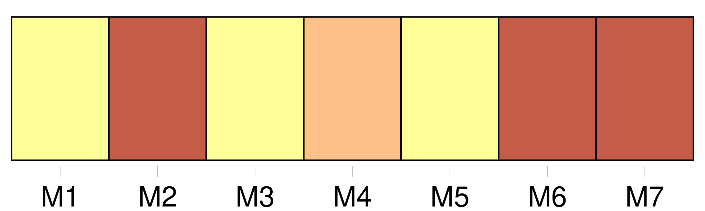
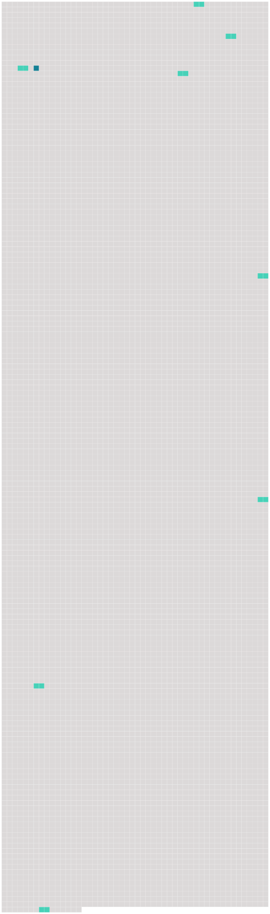

Longueur nb maillons : 9 mentions |
 |
C'était mon cher papa qui parlait, et dans ma joie de le savoir là, je fis un brusque mouvement pour me tourner vers lui, mais au même instant, je ressentis dans [la hanche] une douleur qui m'arracha un cri aigu et m'obligea de rester immobile. [11 phrases]
J'étais sûre que c'étaient mon père et ma mère qui s'en allaient ainsi, et malgré la douleur de [ma hanche] , je voulus me dresser pour les appeler, mais le médecin appuya des deux mains sur ma poitrine, en disant : [12 phrases] Un homme, toujours le même, levait sur moi un marteau, et cherchait à me briser [la hanche] en [la] frappant à grands coups. [2 phrases]
Puis, l'homme au marteau céda sa place à un tombereau plein de pierres dont une roue m'écrasait [la hanche] , mais de temps à autre, je réussissais, pour une minute, à soulever le lourd tombereau, et cette minute sans souffrance m'était plus précieuse que la clarté du soleil. [94 phrases]
Un chien hargneux s'était caché dans [ma hanche] , et au plus petit mouvement de ma part, il mordait et déchirait et sa colère était lente à s'apaiser. [81 phrases]
Je le regrette vite, car dans [ma hanche] , le chien hargneux [69 phrases] Un désir violent, lancinant même, de revoir les miens m'est devenu un mal plus sensible que celui de [ma hanche] [90 phrases] Et quand le printemps revint, le mauvais chien caché dans [ma hanche] avait enfin usé ses crocs. |
 |
Il est possible de télécharger la ressource sur la page Ortolang |
Si vous avez des questions ou vous voyez des erreurs, merci d'envoyer un mail à silvia.federzoni89@gmail.com |